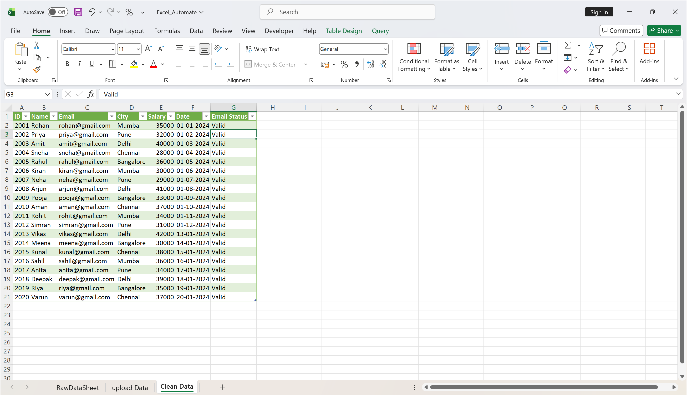
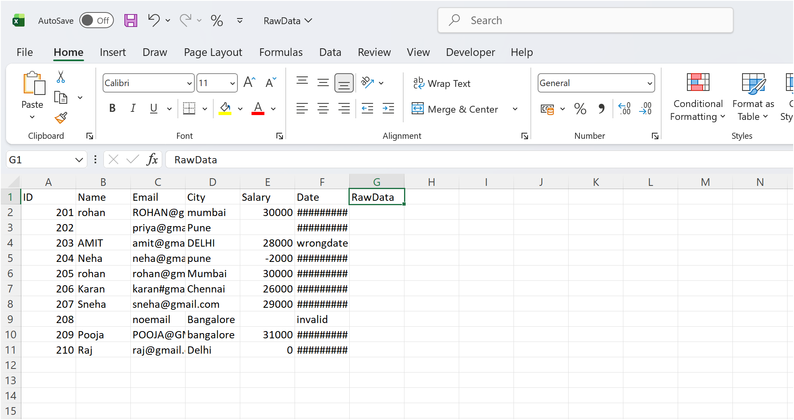
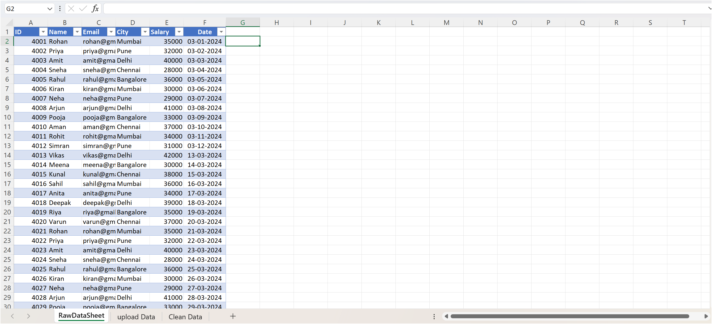
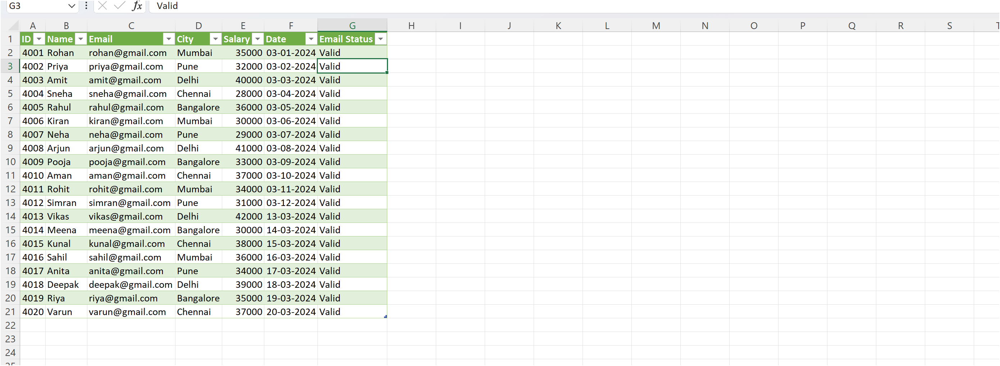

⚙️ Excel Data Cleaning Automation

This project focuses on automating data cleaning processes using Excel and Power Query. It transforms raw messy data into structured, analysis-ready datasets efficiently.
⚙️ Data Cleaning Process
1. Raw Data Import

Imported raw dataset containing duplicates, missing values, and inconsistent formatting.
2. Data Cleaning

Removed duplicates, handled missing values, and standardized columns using Power Query.
3. Transformation

Applied transformations such as column splitting, formatting, and calculated fields.
4. Final Clean Dataset

Generated a clean and structured dataset ready for analysis and dashboarding.